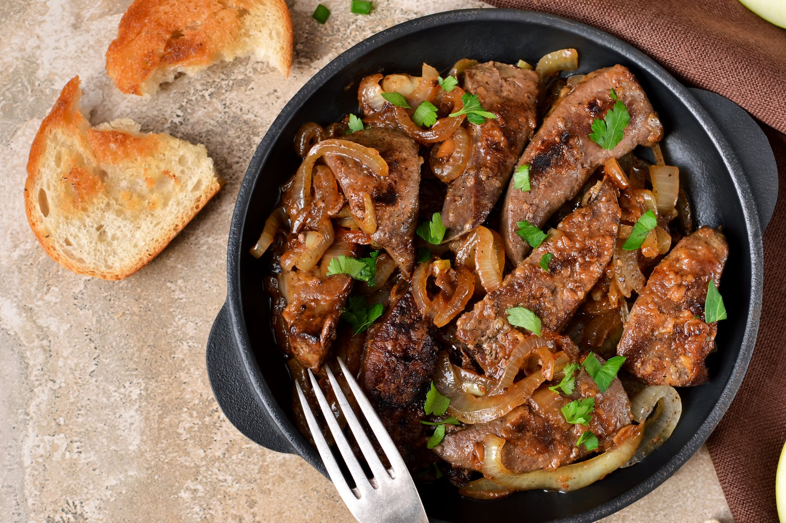

In this recipe we are going to cook a British staple: Liver and Onions
Liver is extremely cheap and high in nutrients and protein. Eat liver when you are poor.
- Liver
- Onions
- Butter
- Salt, pepper, green seasoning, paprika, cinnamon,
geera powder, garlic powder, bbq sauce.
- Chop onions long and thin
- Add butter to medium heat pan
- when butter is melted add the onions
- Caramelize the onions until golden brown
- In a next pan add some butter
- When butter melts add the liver
- Cook for about 15 minutes
- Done!